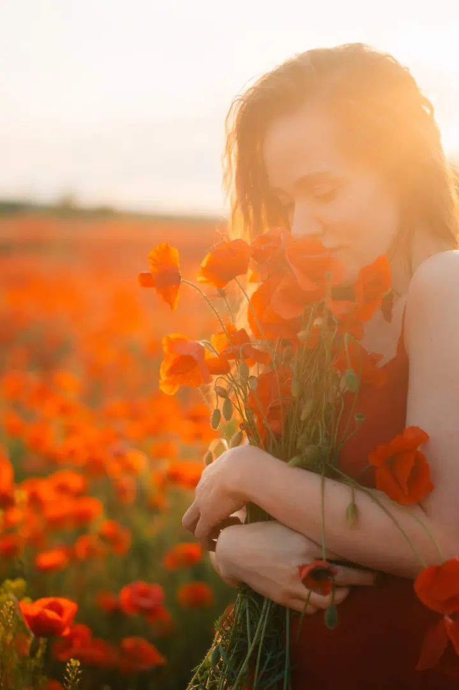
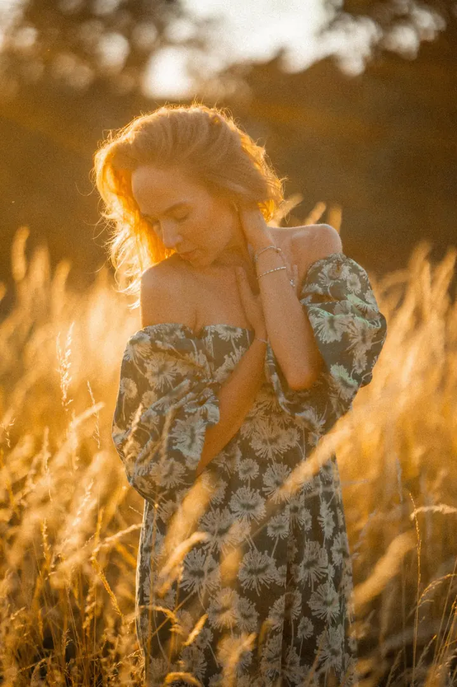
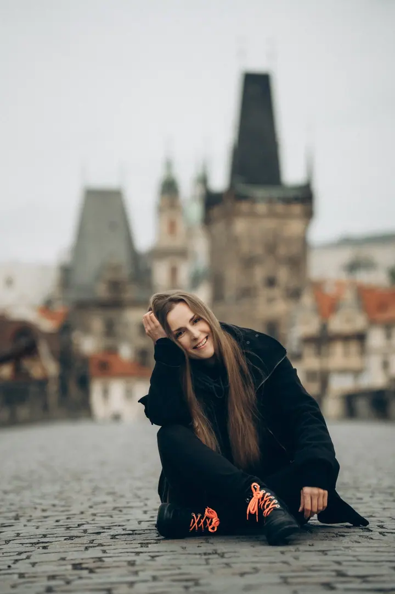
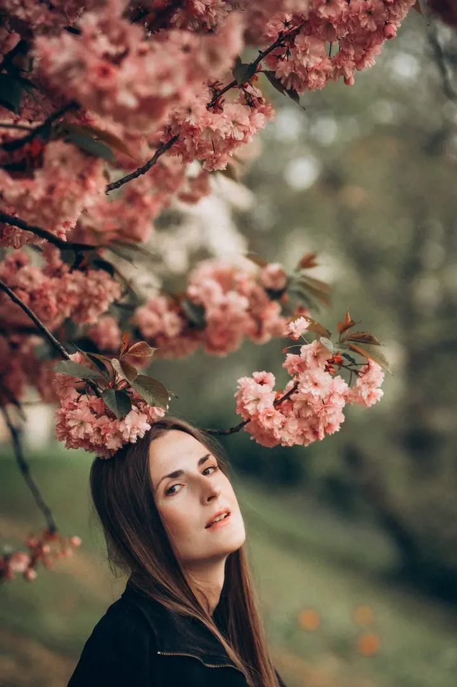

jedna
Individuální focení
Něžné, romantické portréty, při kterých se můžete na chvíli ponořit do sebe. Fotíme na krásných místech Prahy i v jejích méně známých koutech.

Portrétní fotografka v Praze · Praha, Česko, Evropa

Jmenuji se Jevgenija Leonova, ale klidně mi říkejte Vetrana. Žiji a fotím v Praze, ve městě, které se pro mě stalo domovem. Fotím něžné, romantické portréty žen, dětí a zamilovaných párů.
Více o mně
Co fotím
jedna
Něžné, romantické portréty, při kterých se můžete na chvíli ponořit do sebe. Fotíme na krásných místech Prahy i v jejích méně známých koutech.
Focení pro zamilované páry, které přijely do Prahy. Projdeme se městem a já zachytím vaše emoce.
Romantické fotky dětí i celé rodiny při procházce Prahou, v klidu a bez spěchu.
Fotím svatby v Praze i v dalších městech Evropy.

Praha je krásná v každém ročním období.


Za objektivem
Praha je pro mě dokonalé místo k životu. Každý den se jí můžu jen tak procházet, zaběhnout do útulné kavárny, posedět na lavičce v parku, obdivovat taškové střechy, krmit labutě na Vltavě a hladit pávy po jejich nádherných ocasech.
Fotografii se profesionálně věnuji už 16 let. Nejraději fotím šťastné lidi, kteří do Prahy přijeli, a jejich emoce. Ideální je, když naše focení vypadá jako obyčejná procházka městem. Ráda vás při ní provedu a ukážu vám ta nejkrásnější místa Prahy i její skoro neznámá zákoutí.
Kromě Prahy fotím i v dalších městech Evropy. Vyrážím na výlety po Česku, na Moravu za vínem, retro vlakem, do Hallstattu nebo k jezeru Königssee. Praha je ale krásná v každém ročním období a vždycky se do ní ráda vracím.
Jevgenija
Dejte mi vědět, jaké focení si přejete a kdy budete v Praze. Domluvíme se na termínu i na tom, co od fotek čekáte.
Podle vaší nálady navrhnu trasu po Praze, od známých míst po tichá zákoutí, která většina návštěvníků nezná.
Focení probíhá jako obyčejná procházka městem. Nemusíte umět pózovat, stačí se uvolnit a užít si Prahu.
Z focení vyberu a pečlivě upravím ty nejlepší snímky a pošlu vám je v hotové galerii.
Portfolio
Otázky
Hlavně v Praze, kde žiji. Fotím ale i v dalších městech Evropy a jezdím na fotovýlety po Česku i za hranice.
Vůbec ne. Nejraději mám, když je focení prostě procházka po městě. Průběžně vám poradím a zbytek přijde sám.
Praha je krásná v každém ročním období. Pro měkké, teplé světlo doporučuji brzké ráno nebo podvečer.
Ano. Kromě individuálních portrétů a párů fotím i děti a celé rodiny, stejně jako svatby.
Napište pár vět o tom, co si představujete. · +420 776 134 940